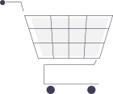
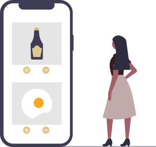

Project Overview
The Problem
Cooking is overwhelming without the right tools.
Users want a smart cooking app that understands their preferences and offers customizable meal plans, personalized recipe recommendations, and smart shopping lists — all in one place.

The Solution
A personal chef in your pocket.
Sizzle helps users find recipes by their requirements through personalized recommendations. It offers voice-guided cooking, smart meal planning, pantry management, and intelligent grocery lists.

How I got there
The Design Process
A human-centered design process from stakeholder interviews to low-fidelity wireframes. Scroll through to explore the work, or jump to a section above.
Competitor Analysis
| Parameter | Yuumly | Paprika |
|---|---|---|
| Target audience | 16-45 | 16-45 |
| Description | Find & manage food recipes | Find, manage & create recipes |
| Unique Features | Smart thermometer, meal planning | Menu feature, offline recipe download |
| Look & Feel | Good, simple UI | Below average UI |
| Usability | Can be overwhelming | Complicated navigation |
Understanding the User
To understand users' real needs, goals, and constraints, I conducted a mixed-methods research approach combining quantitative and qualitative methods.
User Interviews
in-person interviews to deeply understand motivators, frustrations, and goals. Uncovered nuanced behaviors that surveys couldn't capture.
User surveys
Distributed through Google Forms to gather broad quantitative insights on cooking habits, pain points, and app preferences across different demographics.
Affinity Mapping
Survey responses were captured, grouped, and labeled to surface patterns and common themes across user responses.
Defining the Problem Space
To understand users' real needs, goals, and constraints, I conducted a mixed-methods research approach combining quantitative and qualitative methods.
Research Findings
Cook with what you have
Users want to find recipes based on ingredients already in their pantry — not be forced to buy a long list of new items every time.
Flexible meal planning
Users want to chart out meals for the week but with flexibility — the ability to swap, adjust, and adapt plans without starting over.
Personalized recommendations
Generic recipe feeds don't work. Users expect the app to learn their preferences and surface food they'll actually want to make.
Wide filter options
Specific filters matter: under 30 minutes, no chopping required, 5 ingredients or less. Users want control over how simple their cooking experience is.
User Personas
Two personas grounded in the research — a budget-conscious student and a time-poor young professional — shaped every decision from here on.
Priya
College Student
Demographics
- Age: 21
- Location: Ahmedabad
- Education: B.Com
- Status: Single
- Occupation: Student
About
Priya is a college student who stays in an apartment with roommates. Between classes, extra coaching for her MBA, and assignments, her schedule is packed. She loves eating out and exploring new cuisines, but as a student on a tight budget she cooks in her apartment several times a week — looking for something new, quick, and mess-free.
Goals
- Staying under budget
- Managing her schedule effectively
- Avoiding unhealthy food where possible
- Performing well academically
Motivators
- Loves experimenting with recipes
- Exploring different cuisines
- Staying in good shape
- Keeping focus while studying
- Building better cooking skills
Frustrations
- Limited budget
- Stress from college exams
- Not enough time to shop for groceries
- Exhaustion after classes
- Limited cooking appliances
Brands
Westside · McDonald's · Maybelline
Vivek
Junior Software Engineer
Demographics
- Age: 23
- Location: Mumbai
- Education: B.Sc. Computer Science
- Status: Single
- Occupation: Junior Software Engineer at an IT company
About
Vivek works as a junior software engineer at an IT company in Mumbai. He lives alone, commutes by public transport, and — having started his job recently — tries to save money wherever he can. He has to cook for himself but has little time or skill to work with.
Goals
- Working efficiently toward a raise
- Saving money
- Building a strong career
- Becoming financially stable within a few years
Motivators
- Cooking at home to save money
- Avoiding eating out to stay healthy
- Making quick meals
- Wanting a kitchen with better appliances
Frustrations
- Limited cooking skills
- Little free time due to work
- No personal vehicle, so grocery runs are a hassle
- Tight budget as someone new to the workforce
Brands
Adidas · Adobe · Spotify · Netflix
Structuring the Experience
After defining user needs, I mapped out the app's information architecture and core user flows to structure the experience before moving into wireframes.
From Flows to Frames
Bringing It to Life
Design System
Prototype
An interactive walkthrough of the final high-fidelity prototype.